Research output
Publications
Quantum chemistry, quantum computing, and molecular simulation.
* Corresponding author
At UND
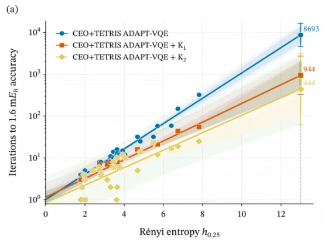
11. Post-Optimization Subspace Corrections to Quantum Ansätze
arXiv:2610.19109 (2026)
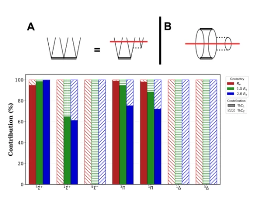
10. Resolving molecular biexcited states using classical leading-order triples corrections to quantum equation-of-motion UCCSD
arXiv:2610.09260 (2026)
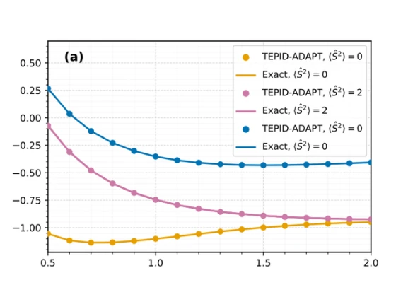
9. Quantum simulation of molecular excited-state manifolds and energies using the TEPID-ADAPT-VQE algorithm
arXiv:2606.29547 (2026)
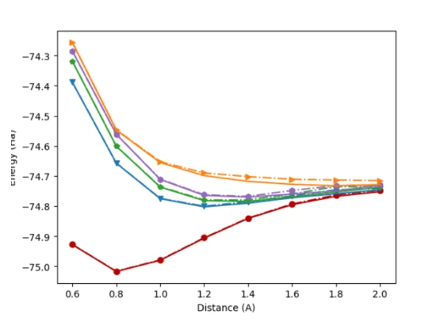
8. Molecular Excited States using Quantum Subspace Methods: Accuracy, Resource Reduction, and Error-Mitigated Hardware Implementation of q-sc-EOM
arXiv:2604.05380 (2026)
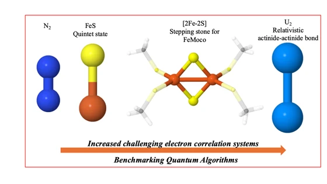
7. Chemically decisive benchmarks on the path to quantum utility
arXiv:2601.10813 (2026)
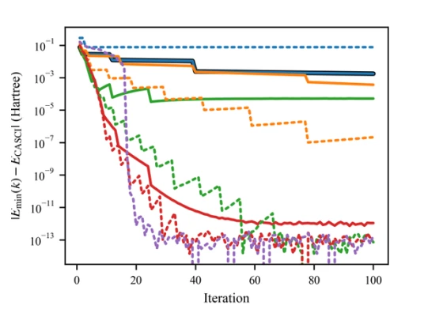
6. Exact and Tunable Quantum Krylov Subspaces via Unitary Decomposition
arXiv:2512.11788 (2025)
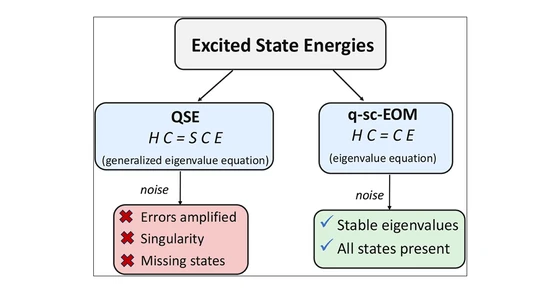
5. Generalized Eigenvalue Problem in Subspace-Based Excited-State Methods for Quantum Computers
J. Chem. Theory Comput. 22, 6, 2892-2903 (2026)
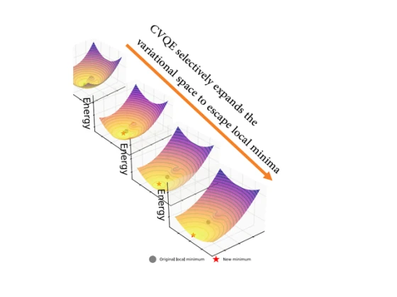
4. Cyclic Variational Quantum Eigensolver: Escaping Barren Plateaus through Staircase Descent
arXiv:2509.13096 (2025)
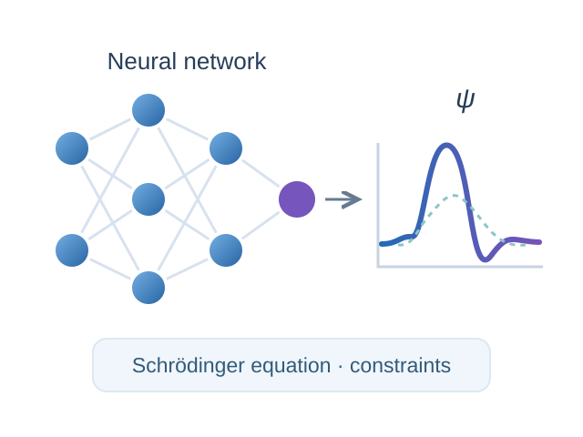
3. Physics-Informed Neural Networks for Quantum Wavefunctions
2024 International Conference on Computer and Applications (ICCA), 1-10 (2024)
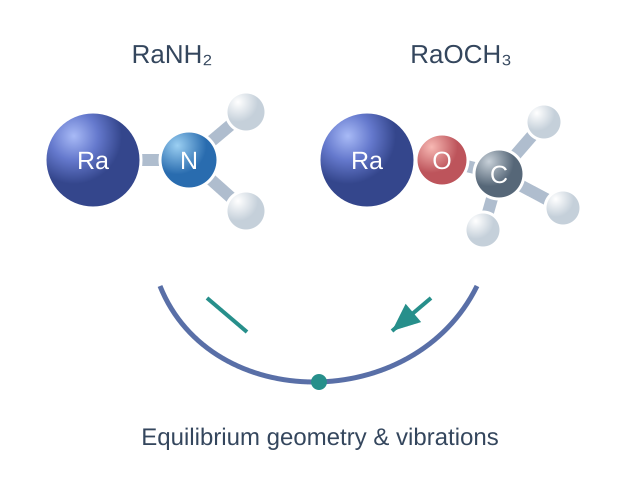
2. Analytic gradients for relativistic exact-two-component equation-of-motion coupled-cluster singles and doubles method
J. Chem. Phys. 159, 244113 (2023)
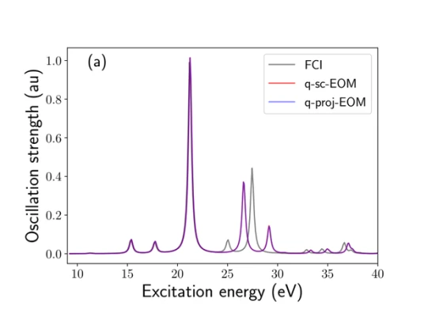
1. Quantum Simulation of Molecular Response Properties in the NISQ Era
J. Chem. Theory Comput. 19, 24, 9136-9150 (2023)
Before joining UND
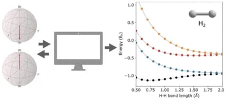
1. Quantum self-consistent equation-of-motion method for computing molecular excitation energies, ionization potentials, and electron affinities on a quantum computer
Chem. Sci. 14, 2405-2418 (2023)
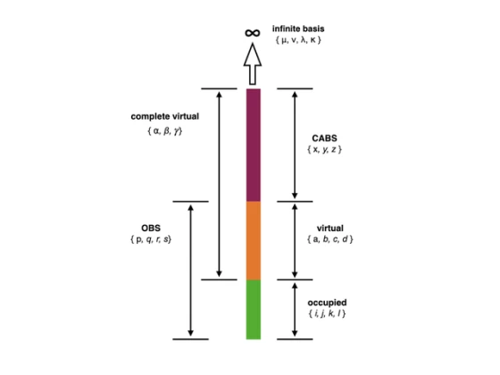
2. Quantum Simulation of Molecular Electronic States with a Transcorrelated Hamiltonian: Higher Accuracy with Fewer Qubits
J. Chem. Theory Comput. 18, 9, 5312-5324 (2022)
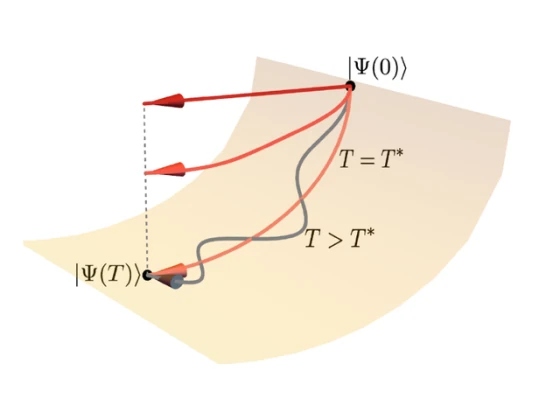
3. Leakage Reduces Device Coherence Demands for Pulse-Level Molecular Simulations
Phys. Rev. Applied 19, 064071 (2023)
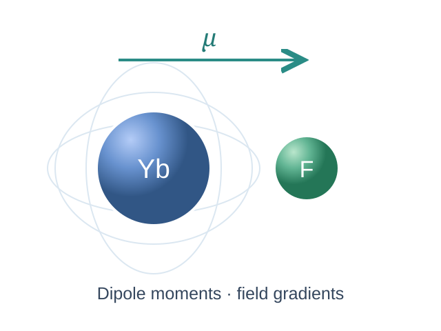
4. Analytic evaluation of energy first derivatives for spin-orbit coupled-cluster singles and doubles augmented with noniterative triples method: General formulation and an implementation for first-order properties
J. Chem. Phys. 154, 064110 (2021)
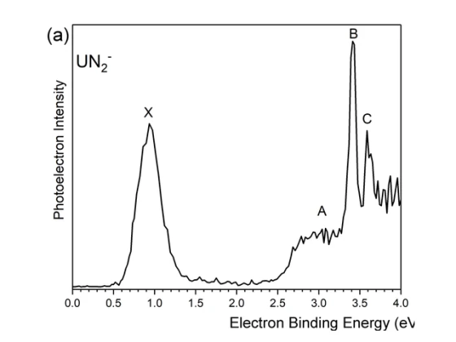
5. Mapping the Electronic Structure of the Uranium(VI) Dinitride Molecule, UN2
J. Phys. Chem. A 124, 32, 6486-6492 (2020)
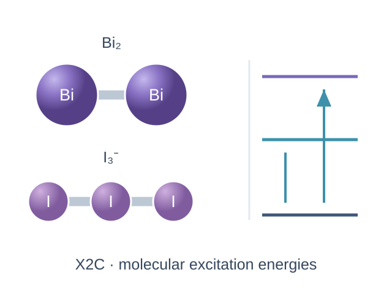
6. Exact two-component equation-of-motion coupled-cluster singles and doubles method using atomic mean-field spin-orbit integrals
J. Chem. Phys. 150, 074102 (2019)
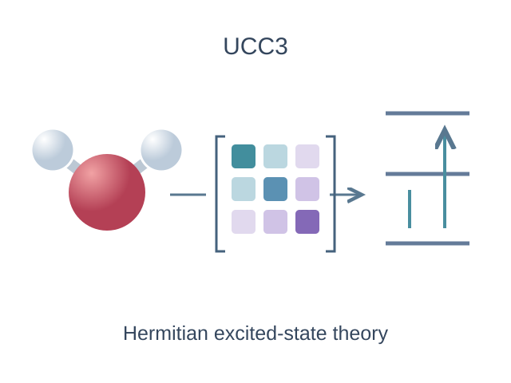
7. Unitary coupled-cluster based self-consistent polarization propagator theory: A third-order formulation and pilot applications
J. Chem. Phys. 148, 244110 (2018)
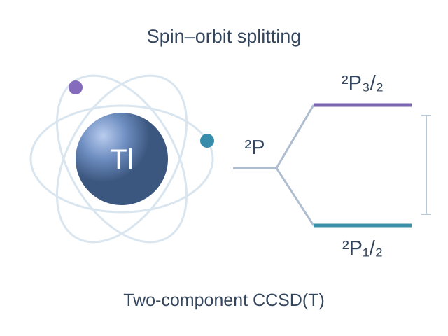
8. Two-component relativistic coupled-cluster methods using mean-field spin-orbit integrals
J. Chem. Phys. 148, 034106 (2018)